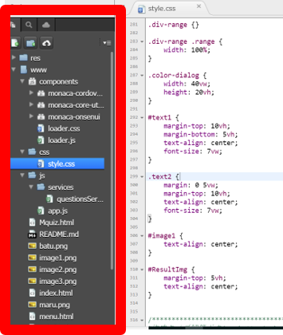

<!--ボタンカラー変更画面-->
<ons-page ng-controller="colorCtrl as color">
    <div class="Quizpage">
        <!--カラーピッカー-->
        <div ng-show="Colorpicker">
            <ons-row>
                <ons-col><span style="font-size:5vw;">ボタン（左上)</span><input id="Leftup" class="color-dialog" type="color" value="#ffffff"> </ons-col>
                <ons-col> <span style="font-size:5vw;">ボタン（右上)</span><input id="Rightup" class="color-dialog" type="color" value="#ffffff"> </ons-col>
                <ons-col> <span style="font-size:5vw;">ボタン（左下)</span><input id="Leftdown" class="color-dialog" type="color" value="#ffffff"> </ons-col>
                <ons-col> <span style="font-size:5vw;">ボタン（右下)</span><input id="Rightdown" class="color-dialog" type="color" value="#ffffff"> </ons-col>
            </ons-row>
            <div class="next-btnP">
                <ons-button modifier="large" ng-click="color.Colorchange()" class="next-btn"> 決定 </ons-button>
            </div>
        </div>
        <!--カラーピッカーここまで-->
        <!--手順1-->
        <div ng-show="Fileshow">
            <div style="text-align:center;margin:0 5vw;margin-top:10vh;font-size: 5vw;"> パソコン画面の左側にあるメニューから<span style="color:red">style.css</span>をクリックしよう。
                <p id="image2">  </p>
            </div>
            <div class="next-btnP">
                <ons-button modifier="large" ng-click="color.next()" class="next-btn"> 次へ </ons-button>
            </div>
        </div>
        <!--手順1ここまで-->
        <div ng-show="Colorvalue">
            <div style="text-align:center;margin:0 5vw;margin-top:10vh;font-size: 5vw;">ボタンの色を選んだ色にするよ</br>
                <div style="text-align:center;margin:0 5vw;margin-top:5vh;font-size: 5vw;"><span style="color:red;">195行目</span>に<span id="area1" style="color:red;"></span></div>
                <div style="text-align:center;margin:0 5vw;font-size: 5vw;"><span style="color:red;">207行目</span>に<span id="area2" style="color:red;"></span></div>
                <div style="text-align:center;margin:0 5vw;font-size: 5vw;"><span style="color:red;">219行目</span>に<span id="area3" style="color:red;"></span></div>
                <div style="text-align:center;margin:0 5vw;font-size: 5vw;"><span style="color:red;">231行目</span>に<span id="area4" style="color:red;"></span></br>を入力しよう！</div>
            </div> 
            <div class="next-btnP">
                <ons-button modifier="large" ng-click="color.Finish()" class="next-btn"> クイズ内容へ </ons-button>
            </div>
        </div>
    </div>
</ons-page>